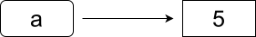
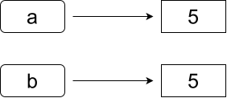
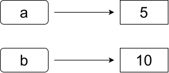
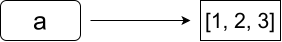
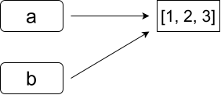
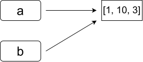

Le JavaScript est un langage de programmation, parmi les plus utilisés au monde
Il existe un langage de programmation nommé Java, qui n'a absolument rien à voir avec JavaScript.
Il ne faut pas les confondre
De nombreux tutoriels et documentations sont disponibles sur presque tous les supports (livres, sites internet, vidéos, etc.)
N'hésitez pas à chercher sur internet dès que vous avez une question.
Savoir utiliser une documentation doit faire partie de vos compétences
En HTML, le JavaScript s'écrit toujours via une balise <script>.
Il peut s'écrire directement dans la balise :
<!DOCTYPE html>
<html>
<head>
<title>JavaScript</title>
</head>
<body>
<script>
console.log('Hello World!');
</script>
</body>
</html>
En HTML, le JavaScript s'écrit toujours via une balise <script>.
Ou référencer le contenu d'un fichier externe :
<!DOCTYPE html>
<html>
<head>
<title>JavaScript</title>
</head>
<body>
<script src="script.js"></script>
</body>
</html>
Ces deux codes sont équivalents si script.js contient console.log('Hello World!');
JavaScript utilise un typage implicite.
Comme en Python, on ne déclare pas le type des variables. Les variables sont déclarées avec let, ou avec const si leur valeur ne change pas.
let maVariable = 3; // Déclare une variable, sa valeur pourra changer
const maVariable = 3; // Déclare une constante, changer sa valeur provoquera une erreur
Selon la norme ECMAScript, toutes les instructions en JavaScript doivent se terminer par un point-virgule, mais l’interpréteur acceptera si vous ne les mettez pas. Prenez l'habitude de respecter le standard et de toujours les utiliser.
Bien que le typage soit implicite, toutes les variables en JavaScript possèdent un type.
Il existe 7 types de base.
const maVariable = "JavaScript"; // Chaîne de caractères
const maVariable = 3.14; // Nombre réel (sur 64 bits)
const maVariable = true; // Booléen
const maVariable = null; // null, indique l'absence d'un objet
const maVariable = undefined; // undefined, indique "pas de valeur"
const maVariable = BigInt(3); // BigInt, entier sans limites
const maVariable = Symbol("foo"); // Symbol, pas utile dans ce cours
L'instruction typeof retourne le type de la variable sous forme de chaîne de caractères
const maVariable = false;
const typeDeMaVariable = typeof maVariable; // typeDeMaVariable vaut "boolean"
Il existe également d'autres types non basiques, qui sont des structures stockant des types basiques (tableaux, objets, etc.).
Pour afficher un texte dans la console :
console.log("Bonjour"); // Affichera "Bonjour" dans la console
console.warn("Attention"); // Affichera un message d'avertissement
console.error("Erreur"); // Affichera un message d'erreur
La fonction print() existe en JavaScript, mais il s'agit de la commande pour imprimer la page web !
La console des navigateurs web permet d'afficher plus que du texte. Il est possible d'afficher et d'explorer des variables, des objets, etc. Utilisez-la pour debugger votre code.
Les conditions s'écrivent de la manière suivante :
if(a < b){
console.log("Do A");
}else if(a < c){
console.log("Do B");
}else{
console.log("Do C");
}
Comme en Python, les blocs else if et else sont facultatifs
Il est aussi possible de faire des ternaires avec la syntaxe condition ? si_vrai : si_faux
const a = 5;
const value = a > 3 ? "Plus grand" : "Plus petit ou égal";
console.log(value); // "Plus grand"
Pour répéter des instructions plusieurs fois, il existe les boucles
let text = "";
while(text != "Bonjour"){
text = prompt("Dites 'Bonjour' !"); // prompt() demande à l'utilisateur d'entrer un texte
}
console.log("Vous avez dit bonjour !");
La boucle while répète son contenu tant que la condition est vraie.
La boucle while est utile quand on ne connaît pas le nombre de répétitions à faire.
Attention à toujours vous assurer que la boucle se terminera, sinon c'est une boucle infinie
La boucle for est une autre manière de répéter des instructions
for(let i=0; i<10; i++){
console.log(i); // 0 1 2 3 4 5 6 7 8 9
}
La boucle for(initialisateur ; condition ; iteration ) :
initialisateur avant d'entrer dans la boucleiteration après chaque tour de bouclecondition est vraie
Ce type de boucle est utile quand on connait le nombre de répétitions à faire.
Elle permet d'éviter des erreurs qui créent des boucles infinies, car il est plus simple de voir que la boucle s'arrêtera dans tous les cas.
Les tableaux sont l'équivalent des listes en Python
const a = []; // Tableau vide
const b = [1, 2, 3]; // Tableau de nombres
const c = [1, "a", null, 12.4, [1,2] ]; // Les tableaux peuvent contenir un mélange de types
console.log(c[1]); // Accès aux éléments : affiche "a".
c[58] = true; // On peut assigner n'importe quel élément d'un tableau.
// Tous les éléments non assignés valent 'undefined'
b.push(5); // "push" ajoute un élément, b vaut alors [ 1, 2, 3, 5 ]
b.pop(); // "pop" supprime et renvoie le dernier élément
// b contient alors [1, 2, 3]
console.log(b.length); // Affiche 3. "length" retourne la taille du tableau
const d = [[1,2,3], [4,5,6], [7,8,9]]; // Il est possible d'avoir des tableaux de tableaux
console.log(d[1][2]); // Affiche 6
La numérotation des tableaux commence toujours à 0. tab[3] affichera donc le 4e élément de tab.
Techniquement, en JavaScript, les tableaux sont des objets. typeof [] retourne "object"
Les fonctions se déclarent avec le mot-clé function
function add(a, b){
return a+b;
}
console.log(add(2,3)); // 5
En JavaScript, les fonctions sont des objets, qui peuvent être stockés dans des variables
const add = function (a, b){
return a+b;
};
console.log(add(2,3)); // 5
On les appelle alors fonctions anonymes, car elles peuvent ne pas porter de nom.
Cela permet de passer des fonctions en paramètres d'autres fonctions
const mul2 = function (a){return 2*a;}
const squared = function (a){return a*a;}
function apply(array, func){
const result = [];
for(const x of array){
result.push(func(x));
}
return result;
}
console.log(apply([1,2,3,4], mul2)) // 2,4,6,8
console.log(apply([1,2,3,4], squared)) // 1,4,9,16
Les fonctions fléchées (arrow functions) sont une notation encore plus compacte
const add = (a, b) => {
return a+b;
};
console.log(add(2,3)); // 5
Si la fonction n'est composée que d'un return, on peut omettre les accolades et le return
const add = (a, b) => a+b;
console.log(add(2,3)); // 5
Toutes ces formes sont identiques, à l'exception de détails que nous n'aborderons pas dans ce cours
Les fonctions fléchées sont très utilisées en JavaScript, elles simplifient beaucoup la syntaxe.
function apply(array, func){
const result = [];
for(const x of array){
result.push(func(x));
}
return result;
}
console.log(apply([1,2,3,4], a => 2*a)) // 2,4,6,8
console.log(apply([1,2,3,4], a => a*a)) // 1,4,9,16
En pratique, les tableaux possèdent une méthode map qui fait exactement l'effet de apply
console.log( [1,2,3,4].map(x => 2*x) ) // 2,4,6,8
console.log( [1,2,3,4].map(x => x*x) ) // 1,4,9,16
Documentation officielle : https://developer.mozilla.org/fr/docs/Web/JavaScript/Guide/Functions
En JavaScript, un objet est un ensemble de propriétés qui possèdent une clé et une valeur
const myObject = {
cle1 : "val1",
cle2 : 35,
cle3 : x => 2*x
}
Il s'agit de l'équivalent des dictionnaires en Python
Les clés peuvent être lues ou modifiées avec une notation utilisant un point ou des crochets
const myObject = {
nombre: 8
};
console.log(myObject.nombre); // 8
console.log(myObject['nombre']); // 8
myObject.nombre = 9; // Assigne 9
myObject['nombre'] = 9; // Identique à la ligne précédente
Lire une clé qui n'existe pas retourne la valeur undefined.
Assigner une clé qui n'existe pas crée cette clé.
On peut lister les clés d'un objet avec la boucle for...in
const myObject = {
elem1: 8,
elem2: "A"
};
for(const k in myObject){
console.log(k + " : " + myObject[k]);
}
// Affichera :
// elem1 : 8
// elem2 : A
On peut définir des fonctions dans un objet de deux manières
const mesFonctions = {
mult2 : function(x){ // Manière 1 : Assigner une fonction à une propriété
return x*2;
},
mult3(x) { // Manière 2 : Directement écrire la fonction sans
return x*3; // lui donner explicitement une clé
}
};
console.log(mesFonctions.mult2(3)) // 6
console.log(mesFonctions.mult3(3)) // 9
Ces deux manières sont équivalentes
On appelle les variables stockées dans un objet des attributs
On appelle les fonctions stockées dans un objet des méthodes
const voiture = {
poids: 1400, // Attribut
marque: "BMW", // Attribut
couleur: "blanc", // Attribut
sieges_chauffants: true, // Attribut
start_moteur() { /* ... */}, // Méthode
stop_moteur() { /* ... */ }, // Méthode
marche_arriere() { /* ... */ } // Méthode
};
Comment faire si on souhaite créer plusieurs voitures dans notre programme sans se répéter ?
Comment faire pour que les méthodes d'un objet affectent ses attributs ?
JavaScript permet de créer des constructeurs. Un constructeur est simplement une fonction destinée à créer des objets
function Point(x,y){
this.x = x;
this.y = y;
this.display = () => console.log("("+this.x+";"+this.y+")");
}
const p = new Point(10, 20); // Crée un objet nommé "p"
console.log(p.x); // 10
p.display() // (10;20)
Le mot-clé this est une référence vers le contexte courant, c'est-à-dire, dans ce cas, l'objet qui est créé par la fonction.
Le mot-clé new indique de faire, à partir du contexte de la fonction, un nouvel objet. C'est-à-dire, de passer tout ce qui a été assigné à this dans p
En JavaScript moderne, il existe une syntaxe plus proche des autres langages orientés objet.
Nous utiliserons cette syntaxe, plus lisible pour des objets complexes.
class Point{
constructor(x,y){ // Le constructeur est une fonction qui se nomme toujours "constructor"
this.x = x; // C'est cette fonction qui sera appelée avec "new"
this.y = y;
}
display(){
console.log("("+this.x+";"+this.y+")");
}
}
const p = new Point(10, 20); // Crée un objet nommé "p"
console.log(p.x); // 10
p.display() // (10;20)
Les syntaxes de cette slide et de la précédente sont équivalentes
Il est commun de vouloir modifier les attributs d'un objet, mais le faire directement peut créer des problèmes
class Disk{
constructor(x, y, radius){
this.x = x;
this.y = y;
this.radius = radius;
}
perimeter(){
return 2*Math.PI*this.radius;
}
}
const disk = new Disk(4, 5, 8);
disk.radius = -3; // Rien n'empêche d'attribuer des valeurs n'ayant aucun sens
console.log(disk.perimeter()); // Dans ce cas l'objet se comportera de manière inattendue
On aimerait vérifier que les attributs sont toujours cohérents
Pour cela, on peut utiliser les getters et les setters
class Disk{
constructor(x, y, radius){
this.x = x;
this.y = y;
this.radius = radius;
}
set radius(r){
this._radius = r > 0 ? r : 0; // Ou n'importe quelle autre manière de gérer ce cas
}
get radius(){
return this._radius;
}
}
const disk = new Disk(4, 5, 8);
disk.radius = -3; // Ce cas sera correctement géré
Cela permet aussi de simuler des attributs qui n'existent pas
class Disk{
/* ... même contenu qu'avant ... */
get area(){
return Math.PI*this._radius*this._radius;
}
set area(a){
this._radius = Math.sqrt(a/Math.PI);
}
}
const disk = new Disk(4, 5, 8);
console.log(disk.area); // Comme si area était bien un attribut
disk.area = 5; // On peut également l'assigner
console.log(disk.radius); // Et cela aura modifié la valeur de radius
L'utilisation des getters et des setters n'est pas du tout obligatoire, et certaines personnes écriraient clairement des méthodes getArea() et setArea()
Site officiel (très formel et complet):
Pour les objets : https://developer.mozilla.org/en-US/docs/Web/JavaScript/Guide/Working_with_objects
Pour les classes : https://developer.mozilla.org/en-US/docs/Web/JavaScript/Guide/Using_classes
W3Schools:
Pour les objets : https://www.w3schools.com/js/js_object_advanced.asp
Pour les classes : https://www.w3schools.com/js/js_classes.asp
Cours de géoinformatique de Bachelor 2025 (GIN 2025) :
Page GitHub : https://github.com/corentin-junod/HEIG-VD-GIN-2025
Slides : https://github.com/corentin-junod/HEIG-VD-GIN-2025/tree/main/slides/pdfs
En JavaScript, il existe une différence fondamentale entre les types de base et les autres types.
Qu'affiche ce code ?
let a = 5;
let b = a;
b = 10;
console.log(a);
console.log(b);
Ce code affichera :
5
10
Rien de très surprenant
let a = 5;

let a = 5;
let b = a; // Ici "b" est une nouvelle valeur, initialisée à la valeur de "a"

let a = 5;
let b = a; // Ici "b" est une nouvelle valeur, initialisée à la valeur de "a"
b = 10;

En JavaScript les types de base sont immuables. Une assignation créera toujours une copie.
En JavaScript, il existe une différence fondamentale entre les types de base et les objets.
Qu'affiche ce code ?
let a = [1, 2, 3];
let b = a;
b[1] = 10;
console.log(a);
console.log(b);
Ce code affichera :
[1, 10, 3]
[1, 10, 3]
let a = [1, 2, 3];

let a = [1, 2, 3];
// "a" n'est pas d'un type de base. Une copie n'est pas faite.
// "b" sera une référence vers la même valeur que "a"
let b = a;

let a = [1, 2, 3];
// "a" n'est pas d'un type de base. Une copie n'est pas faite.
// "b" sera une référence vers la même valeur que "a"
let b = a;
b[1] = 10; // Comme "b" utilise la même valeur que "a", changer "b" change implicitement "a"

En JavaScript les types non basiques sont mutables. Une assignation créera une référence vers l'objet.
L'observation des slides précédentes implique plusieurs constats :
const a = 6;
a = 7; // Erreur ! Car la valeur de "a" change
const b = [1, 2, 3];
b[0] = 2; // Pas de problème. "b" référence toujours le même tableau.
// On peut dire : "Ce vers quoi 'b' pointe n'a pas changé"
b = [1, 2, 3]; // Erreur !
// Le tableau [1,2,3] de cette ligne est un nouveau tableau, différent de celui au-dessus.
// Ici on change ce vers quoi "b" pointe, et c'est interdit car "b" est constant